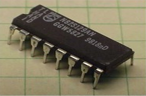

PROM

Για να διευκολυνθεί η ανάπτυξη νέων εφαρμογών, αναπτύχθηκαν οι PROΜs
(Programmable Read Only Memories - Προγραμματιζόμενες Μνήμες Μόνο Ανάγνωσης),
που είναι πιο ευέλικτες, γιατί επιτρέπουν τον προγραμματισμό τους όχι μόνο από τον κατασκευαστή,
αλλά και από το χρήστη. Ο χρήστης μπορεί να "γράψει" το πρόγραμμα του, χρησιμοποιώντας μια ειδική
μηχανή γνωστή ως "προγραμματιστής PROM". Η μνήμη τοποθετείται στη μηχανή αυτή που έχει ήδη διαβάσει
το πρόγραμμα και βραχυκυκλώνει (καίει) τους συνδέσμους ( fusible links), που στη PROM παριστάνουν "1".
Από τη στιγμή αυτή, οι πληροφορίες που αποθηκεύτηκαν παραμένουν αναλλοίωτες. Ο προγραμματισμός της PROM
είναι γνωστός και ως burning και κατά κάποιο τρόπο είναι μια διαδικασία παρόμοια με την εγγραφή των CD-R.